SHAP attributions of the tree-based EKC models — Chinese provincial PM2.5, 2004–2020
Nagoya University (GSID)
September 17, 2026
Act I
The project’s BMA and Double-Selection LASSO fits put the cubic discriminant below zero (about −0.011 to −0.016): PM2.5 falls with income, with no inverted-N.
A flexible Random-Forest Double ML collapsed that discriminant to about zero (+0.0077 and +0.0008). The reason: the 20 controls predict GDP almost perfectly (nuisance \(R^2 \approx 0.95\)). They behave like GDP’s mediators and absorb its signal.
The trees did not find an inverted-N — they stopped seeing GDP. So what are they looking at?
Same fitted forests as c22 — we only change how we look at them.
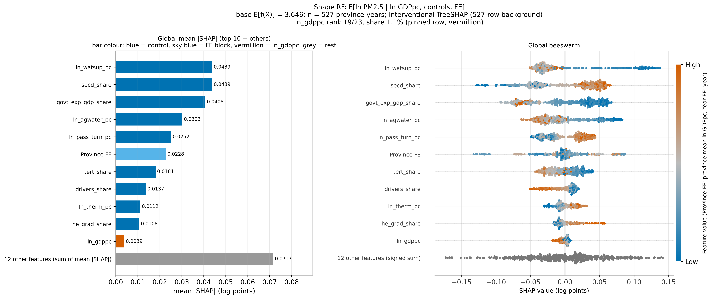
Shape RF, interventional TreeSHAP: mean |SHAP| (left, ln_gdppc pinned in vermillion) and beeswarm (right).
GDP’s typical attribution is 0.0039 log points — about 0.16 μg/m³, an eleventh of the top feature.
Act II
\[f(x_i) \;=\; \phi_0 \;+\; \sum_{j=1}^{M} \phi_{ij}, \qquad \phi_0 = \mathbb{E}\,[f(X)]\]
Interventional TreeSHAP: each credit \(\phi_{ij}\) averages the feature’s marginal contribution over coalitions, filling absent features from all 527 province-years. Credits are in log points of the model’s target.
Every attribution is a statement about the fitted forest, not a causal effect.
Comparing the three forests reveals over-control from the prediction side.
| Quintile | Provinces | Median province | GDPpc, geometric mean (yuan) | East / Central / West |
|---|---|---|---|---|
| Q1 | 7 | Yunnan | 16,735 – 24,792 | 0 / 1 / 6 |
| Q2 | 6 | Jilin | 24,899 – 26,826 | 1 / 3 / 2 |
| Q3 | 6 | Hebei | 26,912 – 30,195 | 1 / 3 / 2 |
| Q4 | 6 | Liaoning | 33,123 – 47,029 | 3 / 1 / 2 |
| Q5 | 6 | Jiangsu | 49,170 – 90,121 | 6 / 0 / 0 |
Provinces are ranked by mean ln GDPpc. The quintiles mix income with geography: Q1 is 6/7 Western, Q5 is all Eastern.
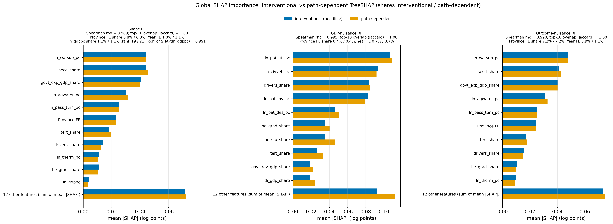
Global mean |SHAP| under both explainers for the three forests (blue interventional, orange path-dependent).
The global rankings do not depend on how correlated features are handled — but agreement is not identification.
Act III
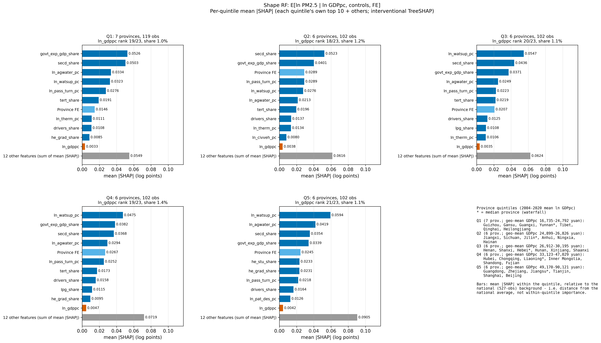
Shape RF: each quintile’s own top 10 by mean |SHAP|, ln_gdppc pinned in vermillion with its rank in each title.
From the poorest to the richest provinces, GDP never holds more than 1.4% of the attribution.
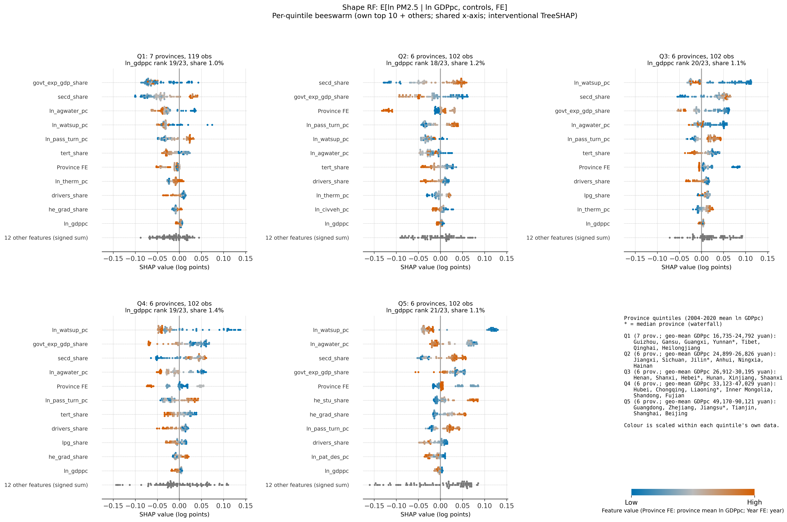
Shape RF: per-quintile beeswarms on a shared x-axis (each quintile’s own top 10, ln_gdppc pinned).
Predicted PM2.5 (geometric mean) Q1–Q5: 31.0 · 34.8 · 46.6 · 39.3 · 43.4 μg/m³, not monotone in income. GDP ranks 19 · 18 · 20 · 19 · 21.
Structure, water and province carry 72–89% of the quintile gaps. GDP carries at most 0.003 log points.
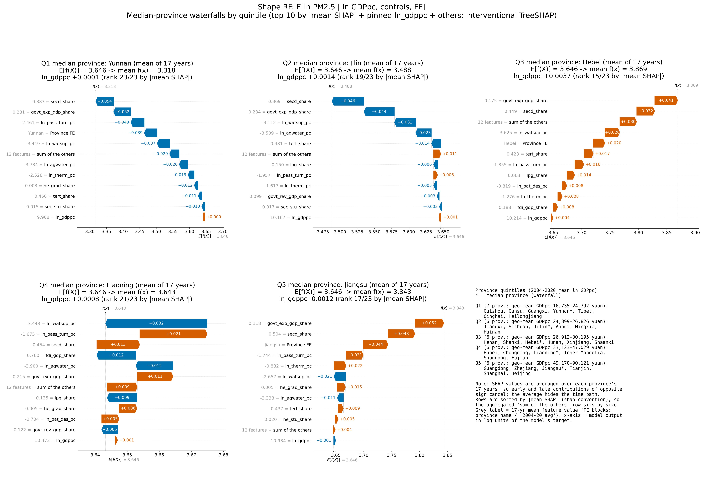
Shape RF: 17-year-average waterfalls for Yunnan, Jilin, Hebei, Liaoning and Jiangsu.
Yunnan sits 28% below baseline and Jiangsu 22% above it. GDP’s share of either gap is negligible.
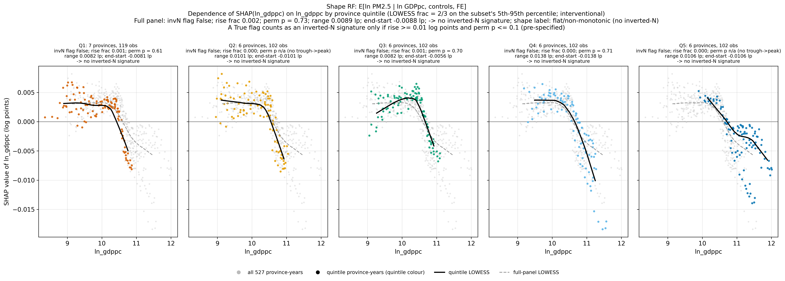
SHAP(ln_gdppc) vs ln_gdppc by province quintile with LOWESS (frac 2/3) and the pre-specified verdict in each facet.
Every curve ends lower than it starts, by 0.6%–1.4% of PM2.5. None rises again.
| Subset | Pre-specified decision | End − start (log pts) | Post hoc: perm. p, decline |
|---|---|---|---|
| Full panel | no inverted-N | −0.0088 | 0.005 |
| Q1 | no inverted-N | −0.0081 | 0.005 |
| Q2 | no inverted-N | −0.0101 | 0.005 |
| Q3 | no inverted-N | −0.0056 | 0.005 |
| Q4 | no inverted-N | −0.0138 | 0.005 |
| Q5 | no inverted-N | −0.0106 | 0.005 |
No inverted-N, but little power against a small one. The post-hoc decline test cannot separate income from the late-2010s fall in PM2.5.
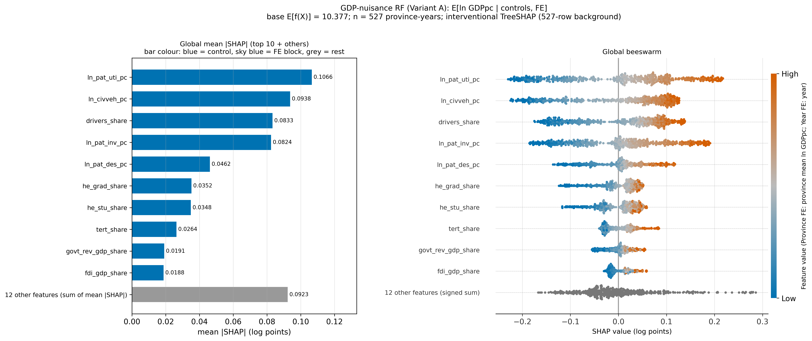
GDP-nuisance RF: global mean |SHAP| and beeswarm.
The forest rebuilds GDP from patents, vehicles and drivers. The FE blocks get about 1%.
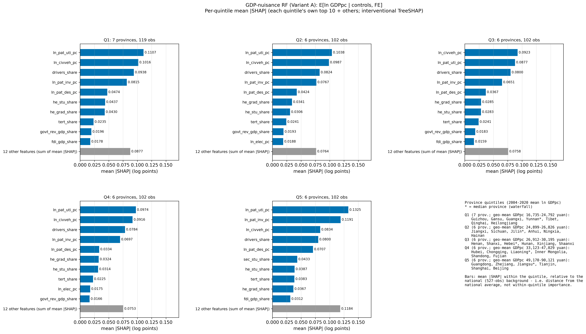
GDP-nuisance RF: per-quintile mean |SHAP| (own top 10 + others).
The same four indicators lead every income group. Invention patents move up to second place in Q5.
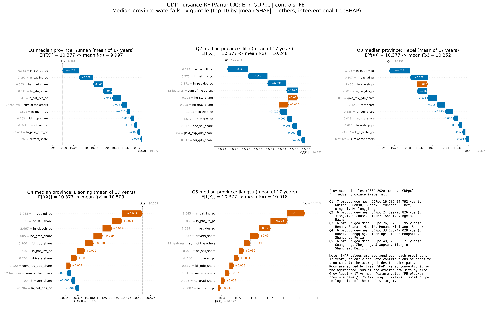
GDP-nuisance RF: 17-year-average waterfalls for the five median provinces.
Rich and poor median provinces differ in the forest’s GDP mainly through patent intensity.
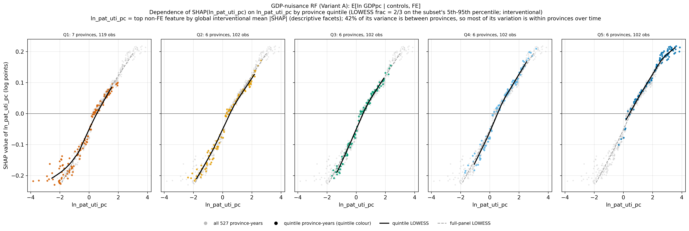
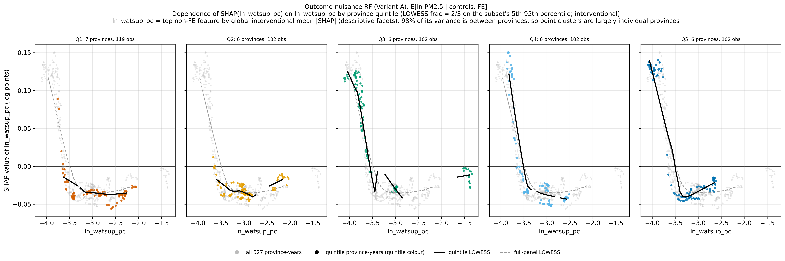
Patents vary within provinces over time (42% between-province). Water supply is 98% between-province, so it acts as a province marker, not a mechanism.
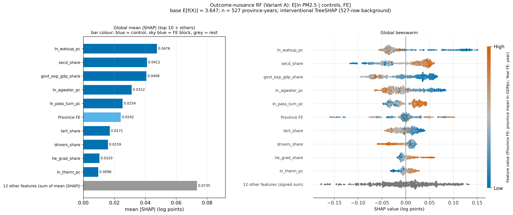
Outcome-nuisance RF (no GDP): global mean |SHAP| and beeswarm — the same top six features, in the same order, as the shape RF.
GDP’s leading proxies are mostly not PM2.5 predictors (\(\rho = -0.41\), no shared top-5). Dropping GDP leaves the fit essentially unchanged.
Objection. GDP looks peripheral only because its correlates (patents, vehicles, water, province identity) soak up its credit. SHAP cannot say that GDP does not matter.
Response. Agreed: these are attributions of the fitted forest, not effects, and the FE blocks are lower bounds. What SHAP does establish holds up:
SHAP cannot price GDP’s causal effect. It does show where the forest routes PM2.5 prediction, and that route bends nowhere.
1.1%
GDP’s share of the PM2.5 forest’s attribution: rank 19 of 23 overall, 18–21 in every income quintile, and no inverted-N signature in any of the 6 subsets
Next: SO₂ · COD · NH₃-N outcomes · 2SLS-BMA endogeneity · spatial models